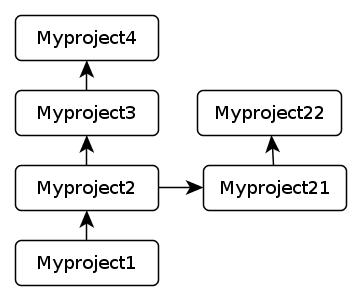

Who is Peter?
I am Peter

owner of an egg boiler and clean toilet
http://happypeter.org
Linus Torvalds
My Role Model for Career
Confucius
My Role Model for Life
That's about ME.
Git, the fast version control system
Just a show-it-off talk
about WHAT not HOW
So what is Git?
Git is a Version Control System (VCS)
what is a project?
A dir with subdirs and files in it
what is "Version Control"?
cp -r
